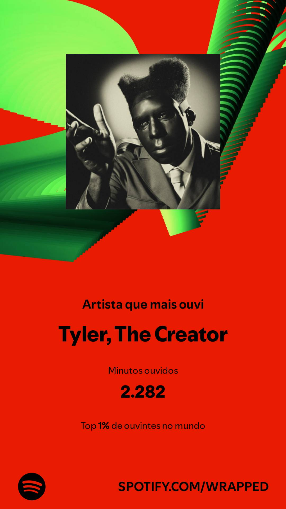

Sobre o Criador
Um pouco sobre quem fez este mini projeto.
Guthiarleyson
Olá, me chamo Guthiarleyson Júlio de Medeiros, sou aluno do IFRN - Campus Currais Novos e atualmente estou no terceiro ano. Para evitar problemas com a pronúncia do meu nome, podem me chamar de Guthi ou Guto mesmo. Fiz este site no período do primeiro ano no campus, estava fazendo para obter a nota em um trabalho. E resumindo, este é um site onde eu apresento o meu artista favorito, mostrando sua história e discografia, aproveite a visita!
Historinha Resumida
Nasci em 4 de Junho de 2008 (18 anos). Estudei o ensino fundamental I e II no Centro Educacional Logos, e chegar no IF foi um grande passo à frente, escolher o curso de informática veio de um motivo bem comum até, saber como os jogos são feitos. Acabou que gostei muito, possuem diversas áreas na informática e estou "caçando" a minha. Este site é o primeiro projeto de vários que virão.
Escolha do Artista
Bem, a escolha do Tyler, The Creator como artista para meu site pode se resumir a esta imagem:
